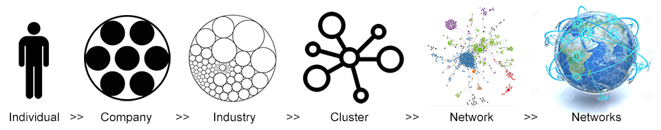

Strengthening communities by improving productivity,
opportunity, and the connections between us all.
How does a community create inclusive economic growth? Increased productivity – output per working hour – is an obvious part of the answer. Increased opportunity – measured in terms of absolute and relative economic mobility – plays a less obvious, but equally important role. To increase productivity and opportunity, though, we need to understand how communities might grow, and how to position individuals for success.
To do this, we need to know what a commmunity does (in terms of economy), how that is changing, what could come next, and how we can leverage that information. Vibrant Networks helps by using network analysis and basic machine learning to understand how individuals combine to create companies, how companies combine to create industries, industries create clusters, clusters create networks, and how networks relate to each other. If the picture below does not make sense already, please be patient - it will.

Each region is more than just a city, or even a county. The US government groups regions into Statistical and Economic Areas. These are either too big, too small, or do not include enough of the country. Academics typically use much more helpful units, called Commuting Zones, that group counties into the regions where their populations tend to work. Unfortunately, the most recent Community Zone data is from 2000, and changes since 2000 cause them to do an imperfect job of reflecting current regions.
In turn, I display these visualizations using custom regions as defined by economic development practitioners, and I'm still thinking about how to solve this problem. For the record, I let the computer group counties by Commuting Zones while it learned from the data.
I define using the counties below:
After defining the region, the next step is to learn what does. To do this, we look at employment data to see the industries active in the region. First, we sort the industries into “Traded” and “Local”, as defined by Michael Porter. Traded industries, such as most manufacturers, create goods or services locally and sell them externally. They bring money into the region. Local industries, such as restaurants and auto mechanics, create locally and sell locally. They circulate money within the region, or possibly extract it to corporate headquarters in other areas. Both Traded and Local industries are important. Local account for most of a region’s jobs, but Traded drives the economy. Without Traded, the Local jobs will start to disappear. The opposite is less true. Also, activity in Local industries should be similar everywhere, while activity in Traded industries should be different. Traded industries better define a region.
What does
Number of Employees by Industry

Size by # Employees
Now that we know what does, next we need to learn how that has changed and how it might change in the future. Industries shrink and grow. By looking at data over time, we can identify trends. The data below shows the change in employment from 2006 to 2015, and then generates an estimate for how industries might change through 2020. The size of the circles reflects number of employees, and the axes measure how much the industry is shrinking or growing (in percent change).
The dashed red line compares the local trend with the national trend. Circles above the line indicate a more positive local trend and possibly some sort of competitive advantage, while circles below the line might indicate competitive disadvantage. Economic development practitioners can talk with their industries to identify the causes for this situation. In turn, they can build upon their strengths and either improve or hedge against their weaknesses.
Use the scroll bar beneath the graph to move from year to year. When you hover over a circle, the industry name appears above the graph and the industry's trend path - how it changes from 2006 to 2020 - appears as a line. Note that the scale changes for year 2020 - it is much smaller, because we lose the big swings from year to year when making a prediction for average change in the future.
How is changing
Percent Change in Number of Employees by Industry Over Time
Size by # Employees
Now we understand what does, how that has changed, and how it might change in the future. That part of the analysis was easy. What if we want to put those industry-level trends in context? What if we want to diversify into other industries? The next part is where the massive computing power of data analytics helps. We need to understand how every industry relates to every other industry.
To do this, we divide the country into commuting zones, treat each commuting zone like a network, and look at four factors: (1) how the quantity of employment in one industry affects the quantity of employment in other industries; (2) how the quantity of establishments/companies in one industry affects the quantity of establishments in other industries; (3) the similarity of occupations employed by industries; and (4) the similarity in inputs and outputs that are consumed and produced by industries. For a human, this would be like trying to boil the ocean. For a computer, this is easy.
We take all this information and create a network map. First, we bring back the circles from earlier that represent ’s activity, and we turn them into nodes. We “light up” the circles/nodes where has a Relative Size greater than 0.5 - the other nodes are gray - and we size every node by the number of employees in the industry. The distance between industries indicates their similarity. A connection means that the two industries are very similar.
Because this graph attempts to visualize a 675-dimension matrix in 2 dimensions, some of the industries might seem closer of further from "similar" industries than they should. Nevertheless, by only looking at the data from above, we see industries group into clusters. Of note, I do not color code by cluster. Once we group clusters into networks, it becomes less necessary to isolate them into discrete units. Instead, I used 9 colors that the human eye can easily identify and linked them to the 9 single-digit NAICS categories.
You can zoom into parts of the map by clicking the zoom icons. You can click on nodes to see their connections, and to see other data such as number of employees, average salary, and growth trends for the industry. You can also toggle between the "Local View", which only lights up nodes with Relative Size greater than 0.5 and scales the nodes using local employment numbers, and the "National View", which lights up all nodes and scales the nodes using national employment numbers.
One additional takeaway is that location matters. Activity rarely pops up when not close to other activity. Regions hop from industry to industry, often following the connections drawn below. While nothing is impossible, this data helps us better understand what is probable.
How ’s industries relate to each other
A network map that positions industries and clusters based on similarity
Despite all this discussion of Traded industries, we have not forgotten the important Local industries. As mentioned before, these provide the majority of jobs. Also, sometimes the unique characteristics of a region turn a Local industry into a Traded industry. For these reasons, we need to check how the employment activity in Local industries compares to what we would expect. Because these industries should grow or shrink relative to the number of employees in the region, we expect that they should have a Relatize Size around 1. The visualization below shows the Top 10 and Bottom 10 industries above/below an RS of 1.
How ’s local industries compare to what we would expect
Difference in number of employees from the average size nationally
Size by # Employees
At this point, we have a massive amount of information. So, what's the big takeaway? We need to use all this information about trends to understand how to increase productivity by creating more jobs that pay better. To do this, we use a SWOT analysis that many people will find familiar.
For Strengths and Weaknesses, we use historical data to create linear projections of how employment will change in any given industry. We then multiply the change in employment by average wage for that industry to generate a Net Gain or Loss. I acknowledge that trying to predict the future can cause problems - if it were an exact science, we would all make billions in the stock market - but ignoring trends because they might not continue is even more problematic. In sum, Strengths and Weaknesses reflect "what is likely to happen".

Next, we think about Opportunities and Threats using network analysis rather than linear projections. Remember, the network analysis looks at much more than historical data. It looks at co-location patterns, employees’ skills, and inputs/outputs. This measure is about “what could happen”, as compared to “what is likely to happen”. To create this metric, we compare the network analysis to the linear projections from above. The Net Gain or Loss reflects the difference between what the linear trends predict, and what the network analysis predicts.
The goal for this section is to provide an interface for the computer to communicate with practitioners. The computer struggles to understand that corporate headquarters in Detroit can be very large because they supervise activity around the world, so it thinks that industry should shrink. It also does not understand that custom computer programming in Austin also serves clients around the world. Noted. On the other hand, it brings more information about patterns in economic development than a practitioner or academic could accumulate in a lifetime, and it points out interesting possibilities.
Positive and negative trends for ’s economy
Comparing predictions based on historical data and network analysis
At this point, we understand what does, how that is changing, and what could come next. This information helps understand how the region can increase productivity, and how it can position members for success. Communities need to build around their Strengths and either fix or hedge against their Weaknesses. They need to find ways to unlock their Opportunities, and protect themselves against Threats.
This is only one piece of a much larger analysis. Practitioners need to understand whether employers have unfilled jobs or high turnover, whether local labor force participation rates reflect solvable logistical or social issues, whether spatial inequality has isolated communities from effective engagement in the labor market, whether members are properly engaged and incentivized to invest in education, and myriad other issues.
Understanding the local economic network helps understand and create strategy regarding those other issues. When communities understand how they might grow, they can make solid decisions about how to invest their resources. Should they chase biotech? Not unless they have other "nearby" activity. Should they give tax incentives to a company that will create low-paying jobs? Not unless they have high unemployment or relatively low average wages. The networks create a framework, and the robust analytics can help inform the tough decisions that community leaders need to make every day.
Click here to view data for another city, or click Graphs above to view the visualizations without accompanying text.